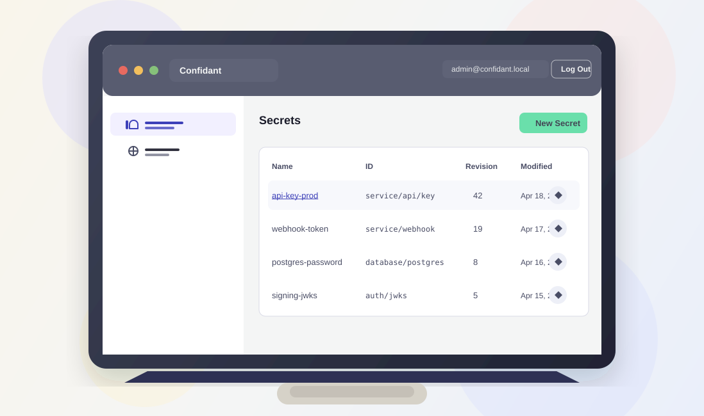

Confidant¶
Secret management for services and teams.
Confidant stores versioned secrets in DynamoDB, encrypts them with AWS KMS, and only returns the secrets mapped to each service or group.
User-defined groups map secrets to the services that should see them.
Secrets stay encrypted at rest with AWS KMS.
Operators manage secrets, groups, and mappings from one web UI.
